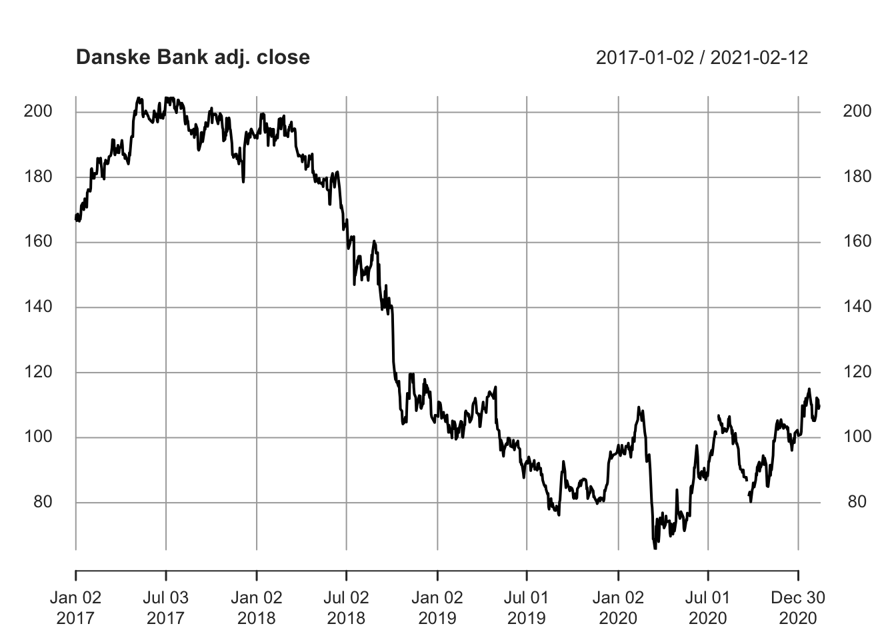
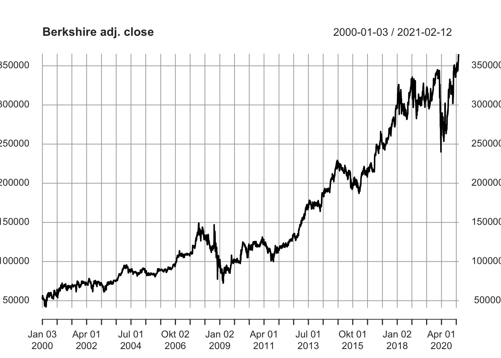
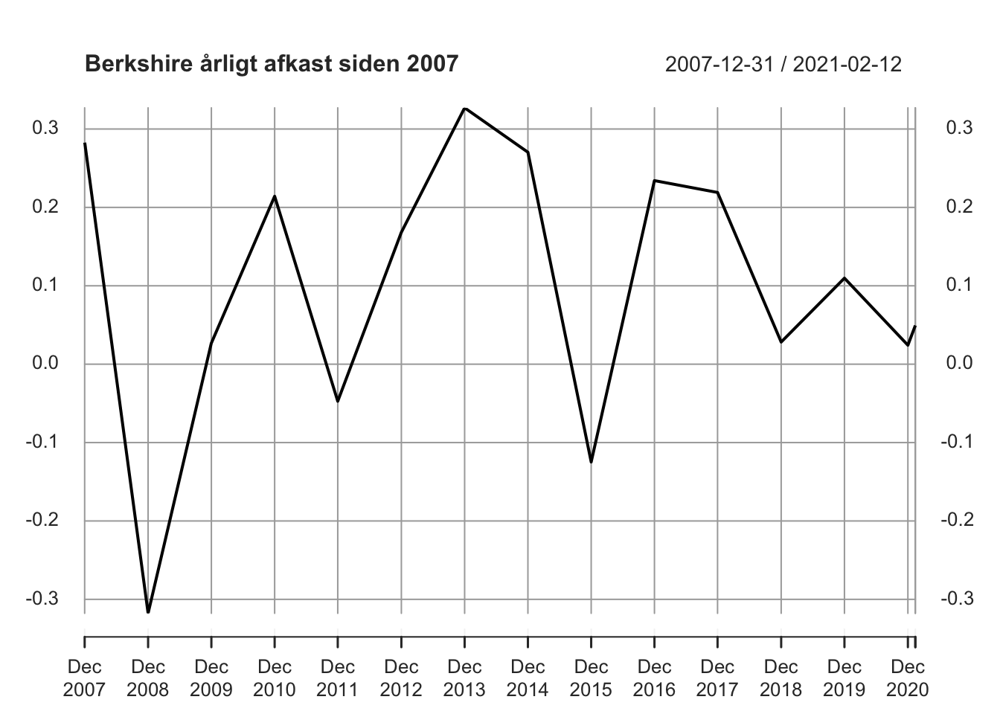

Kapitel 22 Tidsrækker og ARIMA Premium
Gennemgangen af tidsrækkeanalyse bygger meget på praktisk anvendelighed (dvs. vi vil gerne kunne forudsige kursudviklingen), vi vil springe let hen over teorien der kan være tung og er meget omfattende. Nedenstående links giver dog en indføring i den teoretiske del, som vi her ikke berører.
http://ucanalytics.com/blogs/arima-models-manufacturing-case-study-example-part-3/
Her er en gennemgang af forskellige typer af tidsrækker man kan opleve.
https://people.duke.edu/~rnau/411arim.htm#arima010
Video om ARIMA https://youtu.be/Aw77aMLj9uM
En tidsrække er observationer, der er observeret over tid, fx. lukkekursen på Novo i 2018, kan vi beskrive som en tidsrække. Hvor vi både registrerer dato og lukkekursen. ARIMA er et avanceret analyseværktøj til at beskrive tidsrækker. Vi vil i de følgende kaptiler, med eksempler beskrive hvordan de enkelte elementer i ARIMA rent praktisk fungerer.
AR står for AutoRegressive I står for Integrated MA står for Moving Average
Lad i de følgende afsnit se på nogle simple eksempler for trinvis, at kunne beskrive hvorledes modellen fungerer.
22.1 ARIMA(0,0,0) Premium
Nedenfor har vi aktiekurser for 50 dage for en fiktiv aktie, vi vil nu undersøge om disse kan bruges til at forudsige noget om fremtidige aktiekurser. For at gøre dette, skal man enten importere Excelfilen, eller copy paste data fra rammen nedenfor.
Hent ARIMA1.xlsx Excel filen her. Importer ARIMA1.xlsx til R via menuen File - Import Dataset - Excel. Nu skal datasættet rettes til en tidsserie med ts() kommandoen.
Vi kan nu plotte vore data i R.

Det er svært at se nogen tydelig udvikling i kursen.
Vi benytter auto.arima til at undersøge om der er en systematik i tidsserien, for at bruge denne funktion skal vi hente og loade pakken forecast med fx. pacman:
Funktionen auto.arima i R er en fantastisk funktion, der automatisk finder den ARIMA model, der passer bedst på observationerne.
## Series: ARIMA1
## ARIMA(0,0,0) with non-zero mean
##
## Coefficients:
## mean
## 19.8964
## s.e. 0.2872
##
## sigma^2 estimated as 4.209: log likelihood=-106.37
## AIC=216.74 AICc=217 BIC=220.57Output ARIMA(0,0,0) with non-zero mean, fortæller os at data er ligesom hvid støj. Den bedste forudsigelse af aktieprisen, vi kan komme med er gennemsnittet af alle kurserne. Vi kan altså ikke forudsige prisen vha. vore fine værktøjer.
Akaike Information Criterion (AIC) , og Bayesian Information Criterion (BIC) benyttes til at vælge ARIMA modellen med mindst AIC og BIC værdier. auto.arima finder den bedste model automatisk.
Her er ligningen for aktiekursen, den bedste forudsigelse af den fremtidige kurs er den gennemsnitlige kurs der tidligere er observeret.
\[\hat{Y_t}=19.90\]
Variablen \(\hat{Y}_t\), kaldet Y hat t angiver vort
(gæt) på aktiekursen på tidspunkt \(t=1,2,3,...\). Der er således så lidt systematik i Data at her er tale om en ARIMA(0,0,0) model. Vi ser også at der står “ARIMA(0,0,0) with non-zero mean” i output fra R.
22.4 ARIMA(0,0,1) eller MA(1) Moving average Premium
Vi kan i stedet for at bruge tidligere aktiekurser til at forudsige aktiekursen i stedet benytte tidligere målefejl
til at forudsige kursen.
Modellen kan skrives som:
\[\hat{Y_t}=\mu+\theta_1 e_{t-1}\]
Hvis vi forestiller os \(\mu=50\) \(\theta_1=0.5\) kursen til tid t-1 var 120 forudsigelsen til tid t-1 var 100, så målefejlen
til tid t-1 er \(e_{t-1}\) er faktisk kurs minus forudsagt kurs altså 120-100=20. Nu kan vi forudsige kursen til tid t som:
\[\hat{Y_t}=\mu+\theta_1 e_{t-1}\Leftrightarrow \hat{Y_t}=50+0.5\cdot20=60\]
Hent ARIMA4.xlsx Excel filen her. Importer ARIMA4.xlsx til R via menuen File - Import Dataset - Excel. Nu skal datasættet rettes til en tidsserie med ts() kommandoen.

## Series: ARIMA4
## ARIMA(0,0,1) with non-zero mean
##
## Coefficients:
## ma1 mean
## 0.9053 99.0176
## s.e. 0.0664 2.5588
##
## sigma^2 estimated as 95.68: log likelihood=-184.81
## AIC=375.62 AICc=376.14 BIC=381.35Vi kan nu forudsige aktiekursen 12 perioder frem med predict:
## Time Series:
## Start = 51
## End = 62
## Frequency = 1
## [1] 113.64960 99.01756 99.01756 99.01756 99.01756 99.01756 99.01756 99.01756 99.01756 99.01756 99.01756
## [12] 99.01756Hvorfor svarer den forudsagte værdi til mean i en ren ARIMA(0,0,1) eller MA(1) model? (Vink hvad er definitionen på en
)
22.5 Plots med forskellige modeller Premium

## Series: ap1
## ARIMA(3,0,2) with non-zero mean
##
## Coefficients:
## ar1 ar2 ar3 ma1 ma2 mean
## 0.3726 -0.2743 0.6793 0.1207 0.5884 101.5447
## s.e. 0.3082 0.2426 0.1624 0.3579 0.1927 8.7162
##
## sigma^2 estimated as 79.56: log likelihood=-181.72
## AIC=377.44 AICc=380.05 BIC=390.97Kursen svinger omkring middelværdien.

## Series: ap2
## ARIMA(1,2,0)
##
## Coefficients:
## ar1
## -0.2678
## s.e. 0.1378
##
## sigma^2 estimated as 80.49: log likelihood=-176.57
## AIC=357.14 AICc=357.4 BIC=360.92
## Series: ap3
## ARIMA(0,1,2)
##
## Coefficients:
## ma1 ma2
## -0.2666 -0.6915
## s.e. 0.0525 0.0525
##
## sigma^2 estimated as 76.51: log likelihood=-714.27
## AIC=1434.54 AICc=1434.67 BIC=1444.42Vi kan også grafisk vise hvordan kursen vil udvikle sig med 80% og 95% konfidensbælter.
## Point Forecast Lo 80 Hi 80 Lo 95 Hi 95
## 201 97.39451 86.18490 108.6041 80.25089 114.5381
## 202 99.37285 85.47182 113.2739 78.11305 120.6326
## 203 99.37285 85.46389 113.2818 78.10093 120.6448
## 204 99.37285 85.45597 113.2897 78.08882 120.6569
## 205 99.37285 85.44806 113.2976 78.07672 120.6690
## 206 99.37285 85.44015 113.3056 78.06462 120.6811
## 207 99.37285 85.43224 113.3135 78.05252 120.6932
## 208 99.37285 85.42434 113.3214 78.04044 120.7053
## 209 99.37285 85.41644 113.3293 78.02836 120.7173
## 210 99.37285 85.40854 113.3372 78.01629 120.7294
22.8 ARIMA eksempler Premium
22.8.1 Traktorer Premium
Hent følgende data for traktor salg, med følgende kommandoer i R.
data = read.csv('http://ucanalytics.com/blogs/wp-content/uploads/2015/06/Tractor-Sales.csv')
data = ts(data[,2],start = c(2003,1),frequency = 12)Vi ser salget er voksende over tid, der er ligeledes en sæsonkomponent.

Differens tranformer data for at generere stationære data mht. middel (fjern trend)

log transformer data for at sikre stationaritet mht. varians.

Eventuel Differens og log transformation af data for at sikre stationaritet både mht. middel og varians.

Find bedste model med auto.arima, når der er stationaritet.
Akaike Information Criterion (AIC) , og Bayesian Information Criterion (BIC), vælg ARIMA modellen med mindst AIC and BIC værdier. auto.arima finder den bedste model automatisk.
## Series: log10(data)
## ARIMA(0,1,1)(0,1,1)[12]
##
## Coefficients:
## ma1 sma1
## -0.4047 -0.5529
## s.e. 0.0885 0.0734
##
## sigma^2 estimated as 0.0002571: log likelihood=354.4
## AIC=-702.79 AICc=-702.6 BIC=-694.17Nu kan vi forudsige kommende traktor salg med modellen
## Jan Feb Mar Apr May Jun Jul Aug Sep Oct Nov
## 2015 567.7645 566.4765 670.8226 758.9138 855.9482 817.2827 938.7239 934.5120 703.5005 626.9879 571.9988
## 2016 625.2464 623.8280 738.7384 835.7481 942.6065 900.0265 1033.7626 1029.1243 774.7246 690.4657 629.9094
## 2017 688.5479 686.9859 813.5300 920.3613 1038.0383 991.1474 1138.4233 1133.3154 853.1596 760.3701 693.6830
## Dec
## 2015 668.5363
## 2016 736.2206
## 2017 810.7573plot(data,type='l',xlim=c(2003,2018),ylim=c(1,1600),xlab = 'Year',ylab = 'Tractor Salg')
lines(10^(pred$pred),col='blue')
lines(10^(pred$pred+2*pred$se),col='orange')
lines(10^(pred$pred-2*pred$se),col='orange')
22.8.2 Detail debet card forbrug på Island (millioner ISK). Premium


require(forecast)
ARIMAfit = auto.arima(log10(debitcards), approximation=FALSE,trace=FALSE)
ARIMAfit## Series: log10(debitcards)
## ARIMA(2,1,0)(0,1,1)[12]
##
## Coefficients:
## ar1 ar2 sma1
## -0.7167 -0.4372 -0.8352
## s.e. 0.0761 0.0763 0.1085
##
## sigma^2 estimated as 0.0004402: log likelihood=343.95
## AIC=-679.9 AICc=-679.61 BIC=-668.05Nu kan vi forudsige kommende debetkort omsætning med modellen
par(mfrow = c(1,1))
pred = predict(ARIMAfit, n.ahead = 36)
plot(debitcards,type='l',xlim=c(2000,2016),ylim=c(1,40000),xlab = 'Year',ylab = 'Debetcard usage')
lines(10^(pred$pred),col='blue')
lines(10^(pred$pred+2*pred$se),col='orange')
lines(10^(pred$pred-2*pred$se),col='orange')
Forudsagt brug af debetkort bliver:
## Jan Feb Mar Apr May Jun Jul Aug Sep Oct Nov Dec
## 2013 19717.77 19162.87 20436.29 20506.84 23262.14 23545.62 24292.86 25544.16 22267.47 22543.80 22081.63 29090.93
## 2014 20701.39 20352.57 21886.85 21721.53 24745.18 25091.09 25806.49 27175.65 23697.15 23970.40 23490.36 30947.83
## 2015 22017.60 21649.95 23281.85 23104.56 26321.98 26689.74 27450.29 28907.08 25206.87 25497.43 24986.92 32919.4622.9 Forecast Aktiekurser Premium
Man kan hente online aktiekurser med quantmod pakken installer denne med fx. pacman, vi skal også bruge pakken forecast som vi ligeledes henter. Vi henter nedenfor Google justeret lukkekurs til dato det er 6 søjle i GOOG matricen nedenfor. Vi kan se forecaste aktiekursen vha.
pacman::p_load(quantmod, forecast)
getSymbols("GOOG",from = "2017-01-01", to = Sys.Date(),getSymbols.warning4.0=FALSE)## [1] "GOOG"
## Series: GOOG[, 6]
## ARIMA(3,1,3) with drift
##
## Coefficients:
## ar1 ar2 ar3 ma1 ma2 ma3 drift
## -0.1348 -0.1035 0.7554 0.1445 0.0024 -0.8091 0.7313
## s.e. 0.0917 0.0814 0.0860 0.0790 0.0741 0.0758 0.4017
##
## sigma^2 estimated as 248.7: log likelihood=-3141.98
## AIC=6299.96 AICc=6300.15 BIC=6336.95## Point Forecast Lo 80 Hi 80 Lo 95 Hi 95
## 755 1338.914 1318.704 1359.125 1308.005 1369.824
## 756 1338.185 1309.463 1366.906 1294.259 1382.110
## 757 1340.919 1306.843 1374.994 1288.804 1393.033
## 758 1342.410 1304.098 1380.721 1283.818 1401.002
## 759 1341.727 1299.405 1384.050 1277.001 1406.454
## 760 1344.084 1298.679 1389.488 1274.644 1413.524
## 761 1345.316 1297.183 1393.450 1271.703 1418.930
## 762 1344.744 1293.842 1395.646 1266.897 1422.591
## 763 1346.826 1293.657 1399.996 1265.511 1428.142
## 764 1347.889 1292.614 1403.165 1263.353 1432.426
22.9.1 Eksporter Aktiekurser til Excel Premium
Man kan eksportere data til fx Excel med pakken rio, herunder dannes en Excel fil med to ark med hhv. aktiedata og forudsigelser. Funktionen export(), benyttes, man angiver data til de enkelte ark en list() funktion, sidste argument er selve filnavnet. Filen gemmes i arbejdsbiblioteket. Herfra kan den kopieres eller exporteres.
#Hent rio med install.packages("rio")
#Load rio med library("rio") eller benyt pacman
pacman::p_load(quantmod, forecast, rio)
# getSymbols("GOOG",from = "2017-01-01", to = Sys.Date(),getSymbols.warning4.0=FALSE)
agoog <- auto.arima(GOOG[,6])
fagoog <- forecast(agoog)
export(list(GOOG,fagoog),"FILER/google.xlsx") #Skriver filen google.xlsx til arbejdsbiblioteket.## [1] "GS"
## Series: GS[, 6]
## ARIMA(0,1,0)
##
## sigma^2 estimated as 9.779: log likelihood=-1926.95
## AIC=3855.9 AICc=3855.9 BIC=3860.52## Point Forecast Lo 80 Hi 80 Lo 95 Hi 95
## 755 229.93 225.9225 233.9375 223.8011 236.0589
## 756 229.93 224.2625 235.5974 221.2624 238.5976
## 757 229.93 222.9888 236.8712 219.3144 240.5456
## 758 229.93 221.9150 237.9450 217.6721 242.1879
## 759 229.93 220.9690 238.8910 216.2253 243.6347
## 760 229.93 220.1137 239.7463 214.9172 244.9428
## 761 229.93 219.3272 240.5328 213.7144 246.1456
## 762 229.93 218.5951 241.2649 212.5948 247.2652
## 763 229.93 217.9075 241.9525 211.5432 248.3168
## 764 229.93 217.2572 242.6028 210.5486 249.3114
## [1] "DANSKE.CO"
## Series: DANSKE.CO[, 6]
## ARIMA(3,1,2)
##
## Coefficients:
## ar1 ar2 ar3 ma1 ma2
## 0.2538 -0.9428 -0.0947 -0.3231 0.9752
## s.e. 0.0423 0.0208 0.0369 0.0225 0.0158
##
## sigma^2 estimated as 5.825: log likelihood=-1713.6
## AIC=3439.2 AICc=3439.31 BIC=3466.88## Point Forecast Lo 80 Hi 80 Lo 95 Hi 95
## 748 107.6128 104.51975 110.7058 102.88239 112.3432
## 749 107.5819 103.35655 111.8073 101.11978 114.0440
## 750 107.6985 102.55978 112.8372 99.83952 115.5574
## 751 107.7749 101.90110 113.6487 98.79170 116.7581
## 752 107.6873 101.17933 114.1953 97.73420 117.6405
## 753 107.5820 100.47262 114.6914 96.70913 118.4549
## 754 107.6306 99.94307 115.3181 95.87354 119.3877
## 755 107.7505 99.53811 115.9629 95.19073 120.3103
## 756 107.7451 99.06379 116.4265 94.46817 121.0221
## 757 107.6261 98.49710 116.7551 93.66449 121.5877
## [1] "BRK-A"
## Series: `BRK-A`[, 6]
## ARIMA(1,1,0) with drift
##
## Coefficients:
## ar1 drift
## -0.0291 56.6517
## s.e. 0.0141 25.6089
##
## sigma^2 estimated as 3495144: log likelihood=-45029.48
## AIC=90064.95 AICc=90064.96 BIC=90084.52## Point Forecast Lo 80 Hi 80 Lo 95 Hi 95
## 5032 339623.8 337227.9 342019.7 335959.6 343288.0
## 5033 339681.1 336341.8 343020.5 334574.1 344788.2
## 5034 339737.8 335667.0 343808.6 333512.1 345963.5
## 5035 339794.4 335105.0 344483.9 332622.5 346966.3
## 5036 339851.1 334615.5 345086.6 331844.0 347858.2
## 5037 339907.7 334177.9 345637.6 331144.7 348670.7
## 5038 339964.4 333779.7 346149.1 330505.7 349423.1
## 5039 340021.0 333412.7 346629.4 329914.4 350127.7
## 5040 340077.7 333071.2 347084.2 329362.2 350793.2
## 5041 340134.3 332751.2 347517.5 328842.8 351425.9
22.10 Aktieafkast Premium
I Quantmod pakken ligger også mulighed for at beregne fx. dagligt, ugentligt afkast, dette gør vi vha. funktionen “periodReturn”.
## [1] "AAPL"apple <- periodReturn(`AAPL`,period='yearly',subset='2003::') # Årligt Afkast 2003 til i dag
plot(apple, main = "Apple årligt afkast siden 2007")
## Series: apple
## ARIMA(1,0,0) with non-zero mean
##
## Coefficients:
## ar1 mean
## -0.6487 0.3429
## s.e. 0.2375 0.0757
##
## sigma^2 estimated as 0.2204: log likelihood=-7.8
## AIC=21.6 AICc=24.27 BIC=23.3## [1] "BRK-A"berkshire <- periodReturn(`BRK-A`,period='yearly',subset='2003::')
plot(berkshire, main = "Berkshire årligt afkast siden 2007")
## Series: berkshire
## ARIMA(0,0,0) with non-zero mean
##
## Coefficients:
## mean
## 0.1070
## s.e. 0.0499
##
## sigma^2 estimated as 0.03504: log likelihood=3.86
## AIC=-3.71 AICc=-2.51 BIC=-2.58